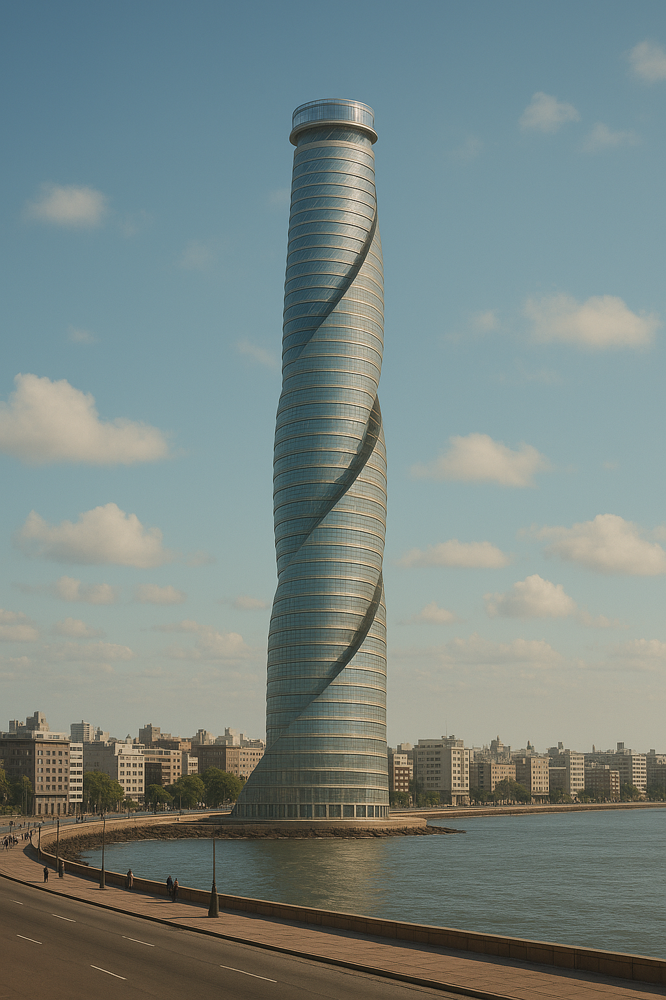
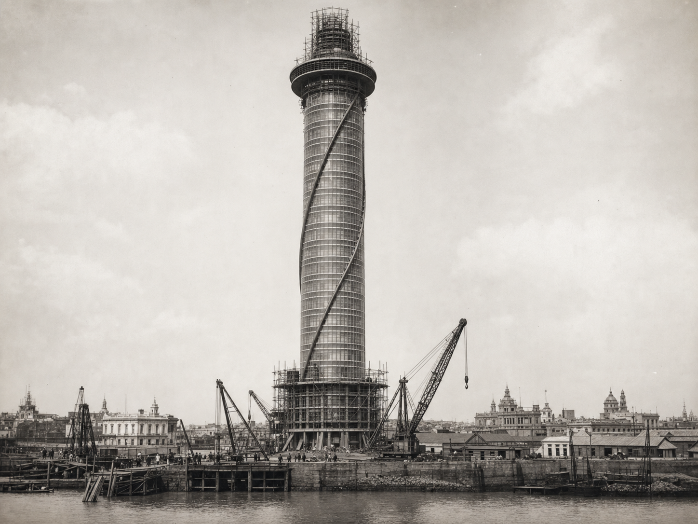
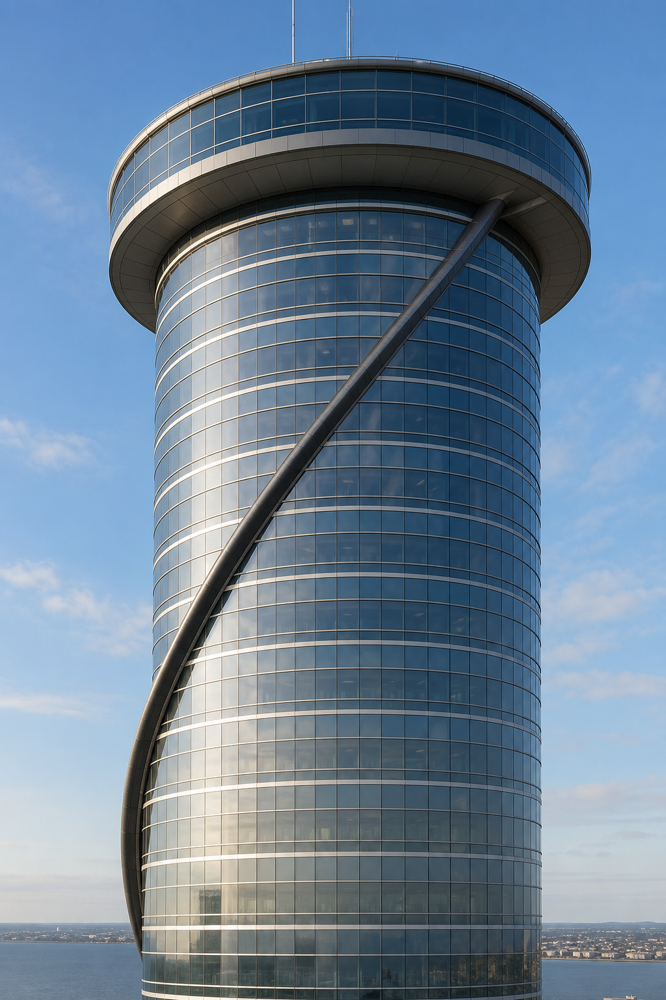
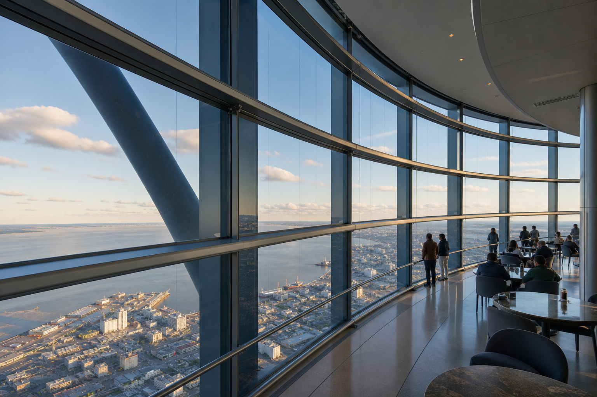
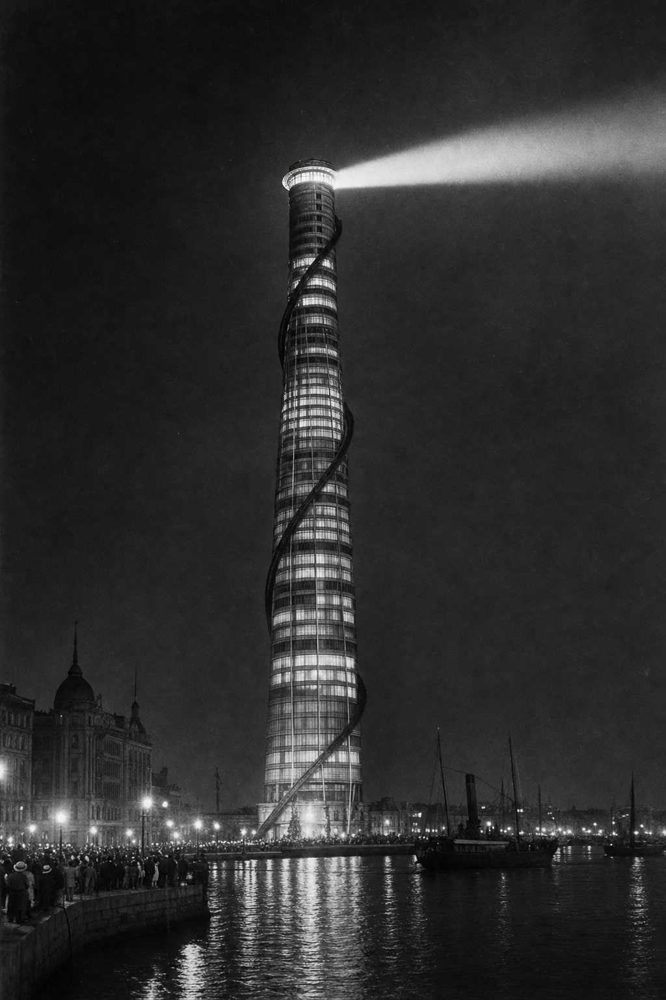
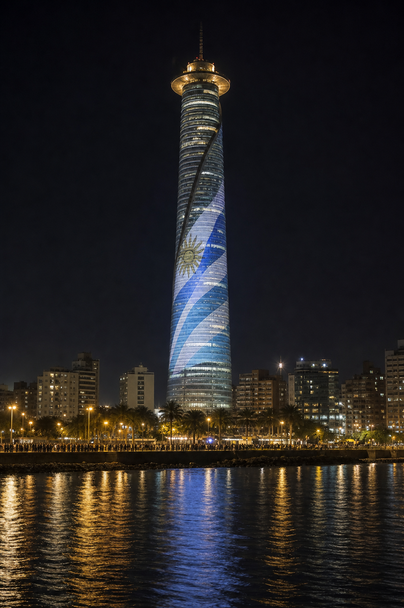
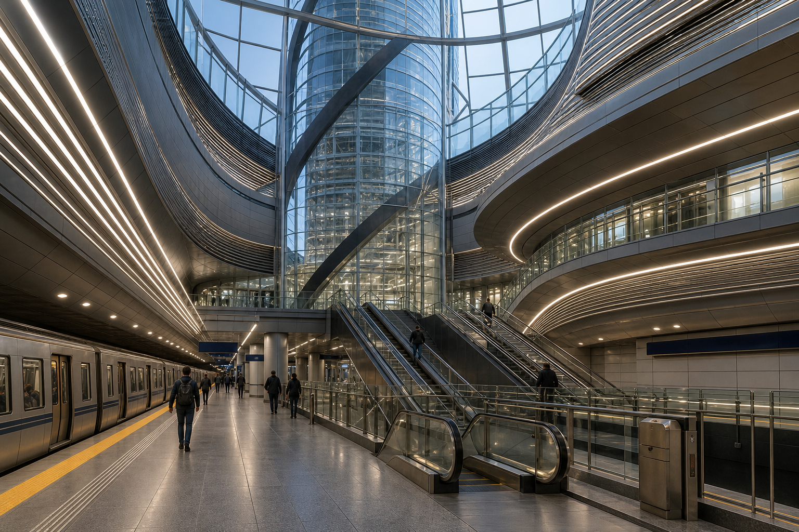
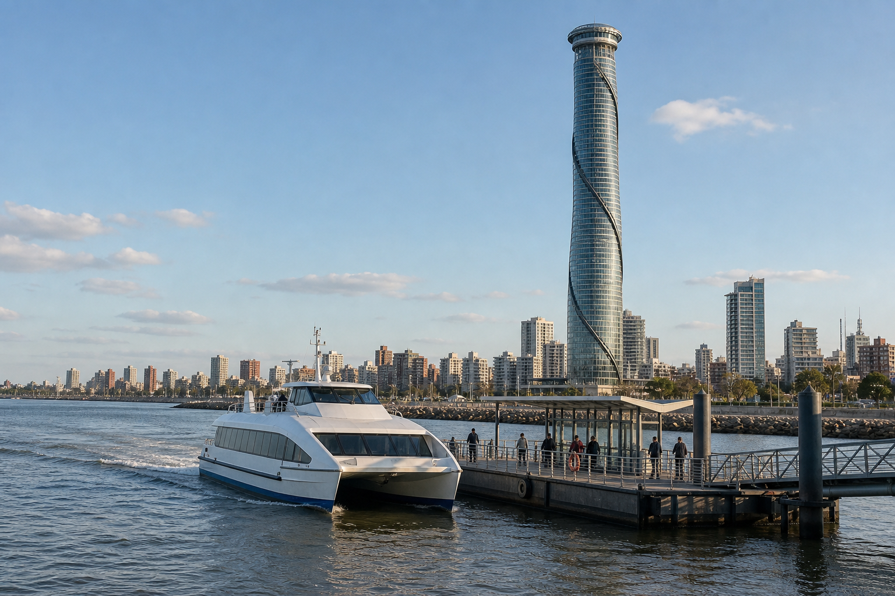
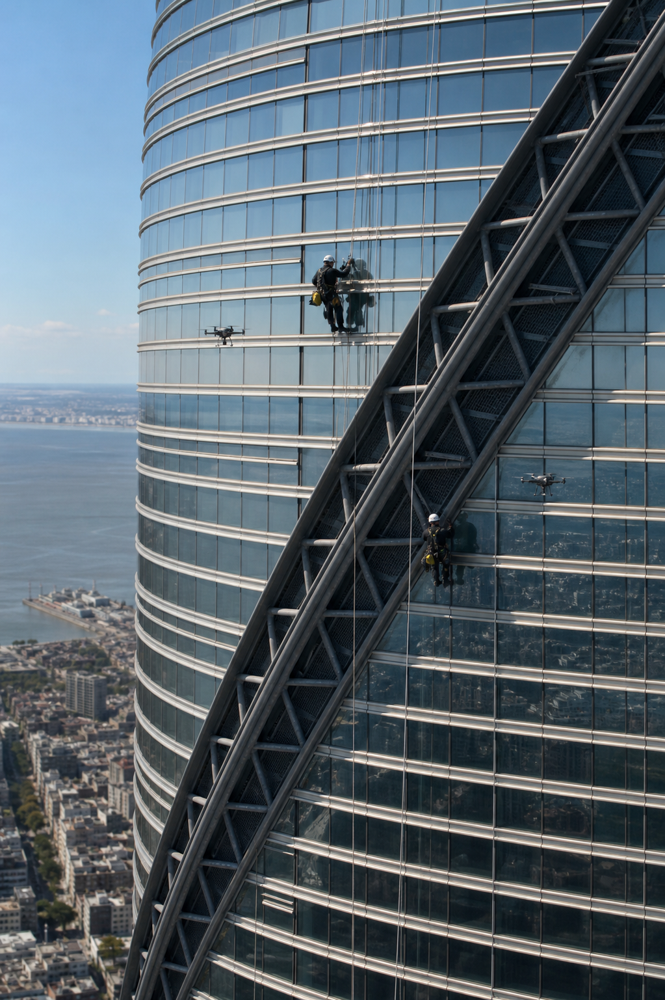

Torre Austral
| Torre Austral | ||||||||||
|
 Vista de la Torre Austral desde la rambla portuaria de Montevideo
| ||||||||||
| Localización | ||||||||||
| ||||||||||
| Información general | ||||||||||
| ||||||||||
| Características | ||||||||||
| ||||||||||
| Diseño y construcción | ||||||||||
| ||||||||||
| www.torreautral.uy |
La Torre Austral es una monumental estructura de acero y cristal ubicada en la rambla portuaria de Montevideo, Uruguay, que se ha convertido en el símbolo arquitectónico más reconocible del país y uno de los hitos más emblemáticos de América del Sur. Desde su inauguración el 25 de agosto de 1925, la Torre Austral se erigió como un ícono inmediato del perfil urbano montevideano y, con el tiempo, alcanzó una relevancia simbólica equiparable a la Torre Eiffel en París, la Torre de Pisa en Italia o el Cristo Redentor de Río de Janeiro.[1]
La Torre Austral fue concebida originalmente como un ambicioso homenaje a la modernidad latinoamericana y como una declaración arquitectónica del progreso uruguayo durante el período conocido como la «Suiza de América». Hoy en día, un siglo después de su construcción, sigue siendo el punto de referencia más citado cuando se habla de ingeniería rioplatense y representa la fusión perfecta entre innovación técnica y expresión artística.
Reconocida mundialmente por su esbeltez característica y su distintiva silueta helicoidal que se retuerce suavemente hacia el cielo, la Torre Austral domina el horizonte de la capital uruguaya desde su posición privilegiada en el Puerto de Montevideo. La estructura encarna el espíritu de progreso y apertura al mundo que ha caracterizado históricamente a Montevideo como puerto de entrada al Río de la Plata. Gracias a la Torre Austral, la identidad visual de la ciudad se asocia universalmente con conceptos de innovación, apertura al Atlántico y un estilo arquitectónico único que combina influencias europeas con elementos autóctonos sudamericanos.[2]
La torre no solo funciona como un hito arquitectónico, sino que también sirve como centro neurálgico de múltiples actividades culturales, científicas y comerciales que han consolidado su posición como el corazón simbólico de Montevideo. Cada año, más de 4,3 millones de visitantes de todo el mundo llegan a Montevideo con la Torre Austral como su principal atractivo turístico, generando un impacto económico estimado en más de 280 millones de dólares anuales para la economía local.[3]
- Historia detallada
- Características arquitectónicas y técnicas
- Diseño y materiales
- Funcionalidades y usos
- Impacto cultural y social
- Innovaciones tecnológicas y sostenibilidad
- Eventos históricos destacados
- Controversias y debates
- Transporte y conectividad
- Aspectos técnicos y de mantenimiento
- Perspectivas futuras
- Impacto arquitectónico global
- Aspectos sociológicos y antropológicos
- La Torre Austral en el arte
- Relaciones diplomáticas y culturales
- Análisis económico detallado
- Conservación y patrimonio
- Conclusión
- Referencias
Historia detallada
Antecedentes y génesis del proyecto (1905-1919)
La idea de la Torre Austral nació durante la célebre Exposición Industrial del Centenario de 1905, un evento que marcó la entrada de Uruguay al siglo XX como una nación próspera y moderna. Durante esta exposición, el visionario ingeniero civil Julio Cánepa y Herrera, graduado de la École Polytechnique de París y pionero de la ingeniería uruguaya, propuso la construcción de una «columna de progreso» en la rambla portuaria que sirviera como faro simbólico del desarrollo nacional.[4]
Cánepa había quedado profundamente impresionado por la Torre Eiffel durante sus estudios en Francia y había desarrollado la convicción de que Uruguay necesitaba su propio monumento a la modernidad industrial. Su propuesta inicial contemplaba una estructura de 300 metros de altura que combinaría funciones de observatorio astronómico, estación meteorológica y torre de comunicaciones. El proyecto inicial fue presentado al presidente José Batlle y Ordóñez, quien inmediatamente reconoció el potencial simbólico de la obra para el posicionamiento internacional del país.
Las primeras maquetas detalladas de la Torre Austral, elaboradas entre 1908 y 1912, circularon por los salones arquitectónicos más prestigiosos de París, Viena, Londres y Nueva York, generando considerable expectación en los círculos intelectuales europeos. El proyecto fue presentado en la Exposición Universal de Bruselas de 1910, donde recibió la Medalla de Oro en la categoría «Proyectos Arquitectónicos Futuristas», otorgada por un jurado presidido por el arquitecto francés Auguste Perret.
Durante estos años formativos, Cánepa trabajó incansablemente para refinar su diseño, incorporando las últimas innovaciones en ingeniería estructural y consultando con expertos internacionales. La colaboración con el arquitecto esloveno-uruguayo Luka Zorić, quien había emigrado a Montevideo en 1906, resultó fundamental para el desarrollo del concepto estético final. Zorić aportó la inspiración biomórfica que derivaría en la característica forma helicoidal de la torre, basada en el patrón de crecimiento del caracol venturoso (Adelomelon beckii), una especie endémica del Río de la Plata.
La Primera Guerra Mundial (1914-1918) retrasó significativamente el proyecto, ya que la importación de materiales especializados desde Europa se volvió prácticamente imposible. Sin embargo, este período de espera permitió a Cánepa y su equipo perfeccionar los aspectos técnicos del diseño y desarrollar soluciones innovadoras utilizando recursos locales. Durante estos años, se establecieron las primeras alianzas con proveedores sudamericanos y se comenzó la exploración geológica del sitio de construcción.
La gran construcción (1920-1925)
La colocación de la piedra fundacional de la Torre Austral ocurrió el 12 de octubre de 1920, en una ceremonia que congregó a más de 50 000 personas en la rambla portuaria. El evento contó con la presencia del presidente Baltasar Brum, representantes diplomáticos de quince países y una delegación especial de ingenieros europeos que habían venido específicamente para presenciar el inicio de lo que muchos consideraban el proyecto de ingeniería más ambicioso de América del Sur.
La fase de excavación y cimentación se extendió desde octubre de 1920 hasta marzo de 1921, representando uno de los desafíos técnicos más complejos de la época. Los ingenieros debieron perforar 63 metros de profundidad para alcanzar el lecho rocoso de basalto fluvial que proporcionaría la base estable necesaria para la estructura. Este proceso requirió la importación de maquinaria especializada desde Alemania y Estados Unidos, incluyendo las primeras excavadoras a vapor utilizadas en Uruguay.

Más de 8000 obreros especializados participaron en las diferentes fases de construcción bajo condiciones climáticas frecuentemente desafiantes, trabajando en turnos de doce horas durante seis días a la semana. La mano de obra incluía no solo trabajadores uruguayos, sino también contingentes significativos de inmigrantes italianos, españoles y alemanes que aportaron técnicas especializadas en soldadura, carpintería metálica y montaje de estructuras de gran altura.[5]
El sistema de construcción modular desarrollado específicamente para la Torre Austral permitió que la estructura creciera a un ritmo promedio de tres metros por semana, una velocidad considerada extraordinaria para la época. Este método revolucionario implicaba el pre-ensamblaje de secciones completas en talleres terrestres, seguido por su elevación e instalación mediante un sistema de grúas telescópicas especialmente diseñadas para el proyecto.
Durante el período de construcción, la Torre Austral se convirtió en una atracción turística por derecho propio. Miles de curiosos se congregaban diariamente en la rambla para observar el progreso de la obra, y se organizaron visitas guiadas semanales que permitían al público general apreciar la magnitud del emprendimiento. La prensa nacional e internacional siguió de cerca cada fase del proyecto, convirtiendo a los ingenieros jefes en verdaderas celebrities de la época.
El proceso de instalación de los elementos decorativos y funcionales de la corona se completó durante los primeros meses de 1925. La instalación del último remache ceremonial y el izamiento de la bandera uruguaya en la cúspide de la Torre Austral ocurrió el 25 de agosto de 1925, en una celebración que duró tres días consecutivos y que incluyó espectáculos aéreos, conciertos sinfónicos y una exposición internacional de avances tecnológicos.
Expansiones y modernizaciones (1930-1985)
La década de 1930 marcó el inicio de la primera gran expansión de las funcionalidades de la Torre Austral. Con motivo del Campeonato Mundial de Fútbol de 1930, considerado el primer Mundial de la FIFA, se instaló un innovador sistema de teleférico que conectaba la torre directamente con el Estadio Centenario. Esta instalación, que requirió dos años de construcción, se convirtió en la primera línea de transporte aéreo urbano de América del Sur y permaneció en funcionamiento hasta 1965, cuando fue reemplazada por el sistema de metro subterráneo.
Durante la década de 1940, en el contexto de la Segunda Guerra Mundial, la Torre Austral adquirió una importancia estratégica inesperada cuando fue utilizada como centro de comunicaciones para las operaciones navales aliadas en el Atlántico Sur. Las autoridades uruguayas autorizaron la instalación de equipos de radar de última generación en los niveles superiores, convirtiendo la estructura en un elemento clave de la red de vigilancia marítima regional.
Los años 1950 trajeron las primeras grandes modernizaciones tecnológicas. En 1956, la Torre Austral se convirtió en el primer edificio del mundo en recibir un lavado completo mediante drones prototipo desarrollados por la empresa sueca ASEA en colaboración con ingenieros uruguayos. Este proceso, que duró seis meses, no solo restauró el brillo original de la estructura sino que también permitió realizar la primera inspección completa de seguridad utilizando tecnología automatizada.
La tragedia de 1974, cuando un rayo de intensidad excepcional dañó severamente la corona de la Torre Austral, paradójicamente resultó en una de las mejoras más significativas de la estructura. La reparación incluyó no solo la reconstrucción de los elementos dañados, sino también la adición del actual sistema de pararrayos de titanio, diseñado por expertos del Instituto Tecnológico de Massachusetts (MIT). Este sistema, que costó más de 2 millones de dólares de la época, convirtió a la Torre Austral en una de las estructuras mejor protegidas contra descargas eléctricas en el mundo.
Durante los años de la dictadura militar (1973-1985), la Torre Austral experimentó un período de relativo abandono en términos de mejoras e inversiones. Sin embargo, paradójicamente, este período vio un aumento en su valor simbólico para la resistencia democrática, convirtiéndose en un símbolo silencioso pero poderoso de la identidad nacional uruguaya en tiempos de represión.
Era democrática y modernización contemporánea (1985-presente)
Tras la restauración democrática de 1985, la Torre Austral experimentó un renacimiento extraordinario, convirtiéndose en símbolo de reconciliación nacional y renovación del espíritu progresista uruguayo. El gobierno de Julio María Sanguinetti lanzó el «Proyecto de Revitalización Austral», una inversión de 50 millones de dólares destinada a modernizar completamente la infraestructura de la torre y expandir sus capacidades funcionales.
La implementación de tecnología sostenible comenzó en 2002, cuando la Torre Austral se convirtió en pionera mundial en la adopción de paneles solares translúcidos integrados arquitectónicamente. Esta instalación, que cubre 40 niveles de la estructura, genera aproximadamente 8500 MWh anuales, suficiente para cubrir el 60 % del consumo energético total de la torre y vender el excedente a la red nacional.
El bicentenario de la independencia uruguaya en 2011 marcó otro hito importante con la implementación del espectáculo de mapping 3D más ambicioso realizado hasta ese momento en el Hemisferio Sur. La proyección, visible desde 15 kilómetros de distancia, batió récords de audiencia televisiva con más de 12 millones de espectadores en vivo desde Uruguay, Argentina y Brasil, y una audiencia global estimada en 200 millones de personas a través de transmisión satelital.
Durante la pandemia de COVID-19 en 2020, la Torre Austral se convirtió en un faro de esperanza literal cuando se implementó un sistema de proyección de mensajes de aliento y solidaridad sobre su fachada. Estas proyecciones, actualizadas diariamente con mensajes de ciudadanos de todo el mundo, se convirtieron en un fenómeno viral global y contribuyeron significativamente al mantenimiento de la moral ciudadana durante los períodos de confinamiento.
La más reciente modernización, completada en 2023, incluyó la instalación de un sistema de inteligencia artificial denominado «ARIA» (Austral Responsive Intelligence Assistant) que gestiona automáticamente todos los sistemas de la torre, desde la iluminación hasta el control de acceso, optimizando eficiencia energética y experiencia del visitante.
Características arquitectónicas y técnicas
La Torre Austral representa una obra maestra de la ingeniería estructural que combina innovación técnica con expresión artística excepcional. Con sus 437 metros de altura total, incluyendo la corona lumínica, la estructura se mantuvo como el edificio autoportante más alto del Hemisferio Sur durante más de cuatro décadas, siendo superada recién en 1968 por la Torre de Televisión de Brasília.

La característica más distintiva de la Torre Austral es su planta octogonal que se retuerce gradualmente en una espiral perfecta, completando una rotación de 245 grados desde la base hasta la corona. Esta configuración helicoidal, inspirada en el caracol venturoso autóctono del Río de la Plata, no solo proporciona una estética única sino que también otorga ventajas estructurales excepcionales en términos de resistencia al viento atlántico y distribución de cargas sísmicas.
El peso estructural total de 42 300 toneladas se distribuye entre un armazón principal de acero austenítico laminado en frío y elementos de hormigón armado de alta densidad. El acero, importado originalmente de las acerías Krupp de Alemania en la década de 1920, fue soldado localmente utilizando técnicas pioneras de soldadura eléctrica que posteriormente influirían en el desarrollo de la industria metalúrgica nacional.
Los cimientos de la torre se extienden 63 metros bajo el nivel del mar, anclándose directamente en el lecho de roca basáltica fluvial que caracteriza la geología portuaria montevideana. Esta cimentación profunda utiliza hormigón de ultra-alta densidad mezclado con cenizas volcánicas importadas desde Chile, creando una base con resistencia a la compresión superior a 80 MPa, extraordinaria para los estándares de la época.
La Torre Austral cuenta con 92 niveles interiores habitables y cuatro plataformas exteriores de observación ubicadas en los niveles 30, 55, 70 y 90. Cada nivel interior tiene una superficie promedio de 350 metros cuadrados, totalizando más de 32 000 metros cuadrados de espacio utilizable. La distribución vertical incluye áreas comerciales en los primeros 20 niveles, oficinas y espacios culturales entre los niveles 21 y 60, instalaciones técnicas y científicas entre los niveles 61 y 85, y áreas de observación y equipos de comunicaciones en los niveles superiores.
El sistema de transporte vertical comprende 14 ascensores panorámicos de alta velocidad con paredes completamente vidriadas, seis ascensores de carga para mantenimiento y suministros, y dos ascensores de evacuación de emergencia con sistemas independientes de energía. Los ascensores panorámicos principales alcanzan una velocidad máxima de ocho metros por segundo y están equipados con sistemas de amortiguación que garantizan un viaje suave incluso en condiciones de viento fuerte.
Las escaleras de emergencia consisten en dos núcleos helicoidales de doble sentido que siguen la geometría espiral de la torre, permitiendo evacuación simultánea en direcciones opuestas. Estas escaleras, construidas con materiales ignífugos de última generación, pueden acomodar la evacuación completa del edificio en menos de 45 minutos según simulaciones realizadas por expertos en seguridad contra incendios.
El sistema de amortiguación sísmica y eólica incluye un péndulo de masa sintonizada de 900 toneladas instalado en el nivel 88, uno de los más grandes de su tipo en América del Sur. Este sistema, diseñado por ingenieros japoneses especialistas en edificios de gran altura, reduce las oscilaciones de la torre en condiciones de viento fuerte hasta en un 70 %, garantizando confort para los ocupantes y longevidad estructural.
Diseño y materiales
Filosofía arquitectónica
El diseño de la Torre Austral representa la culminación de la filosofía arquitectónica expresionista aplicada a la ingeniería de gran altura, fusionando elementos del modernismo europeo con inspiración orgánica sudamericana. El arquitecto principal Luka Zorić desarrolló su concepto estético basándose en lo que denominó «verticalidad orgánica rioplatense», una aproximación que buscaba crear una estructura que pareciera emerger naturalmente del paisaje portuario en lugar de imponerse artificialmente sobre él.
La forma helicoidal característica surgió de estudios biomórficos exhaustivos del caracol venturoso (Adelomelon beckii), particularmente de análisis matemáticos de su patrón de crecimiento espiral. Zorić colaboró con biólogos marinos de la Universidad de la República para comprender las propiedades hidrodinámicas de esta forma natural, aplicando posteriormente estos principios al comportamiento aerodinámico de la torre en el entorno ventoso del Río de la Plata.
La torsión de 2,7 grados por nivel, que resulta en la rotación total de 245 grados, fue calculada para optimizar tanto la resistencia estructural como la experiencia visual. Esta configuración permite que cada nivel tenga orientaciones ligeramente diferentes, maximizando las vistas panorámicas disponibles y creando un efecto visual dinámico que cambia según el ángulo de observación y la hora del día.
Materiales de construcción
El armazón principal emplea acero austenítico laminado en frío de especificación alemana, material que en la década de 1920 representaba el estado del arte en construcción de estructuras de gran altura. Este acero, caracterizado por su excepcional resistencia a la corrosión y fatiga, fue importado en lotes de 500 toneladas desde las acerías Krupp de Essen. El proceso de soldadura local utilizó técnicas de arco eléctrico pioneras, desarrolladas específicamente para este proyecto por ingenieros uruguayos en colaboración con expertos alemanes.
El revestimiento exterior combina paneles de vidrio templado producido en Uruguay con celosías de aluminio naval importado de Noruega. Los paneles de vidrio, manufacturados por la Cristalería Nacional en Montevideo, incorporan óxidos metálicos que otorgan propiedades de autolimpieza y filtrado UV, mientras mantienen transparencia óptica superior al 90 %. Las celosías de aluminio, diseñadas con geometría fractal, proporcionan protección solar regulable y contribuyen al efecto camaleónico que permite a la Torre Austral cambiar de matiz según las condiciones atmosféricas del cielo rioplatense.
Para la cimentación, los ingenieros desarrollaron una mezcla de hormigón de ultra-alta densidad que incorpora cenizas volcánicas de la región de Los Andes chilenos, agregados pétreos locales del Cerro de Montevideo, y cemento Portland especial importado de Bélgica. Esta combinación única resulta en un material con resistencia a la compresión de 85 MPa y características de durabilidad excepcionales en ambiente marino.
Los elementos decorativos incluyen bronce fundido para detalles ornamentales, granito rosa del departamento de Florida para revestimientos de la base, y mármol de Carrara para elementos interiores de prestigio. Todos estos materiales fueron seleccionados no solo por sus propiedades técnicas sino también por su capacidad de envejecer graciosamente, manteniendo la estética original de la torre a lo largo de las décadas.
Innovaciones constructivas
La Torre Austral introdujo numerosas innovaciones constructivas que posteriormente se convertirían en estándares de la industria. El sistema de pre-fabricación modular permitió el ensamblaje simultáneo de múltiples niveles, reduciendo significativamente los tiempos de construcción. Los módulos, fabricados en talleres especializados en la base de la obra, incluían no solo elementos estructurales sino también instalaciones eléctricas, hidráulicas y de climatización preintegradas.
El sistema de izaje utilizó grúas telescópicas de diseño especial, capaces de elevar cargas de hasta 15 toneladas a alturas superiores a 400 metros. Estas grúas, diseñadas colaborativamente por ingenieros uruguayos y alemanes, incorporaron por primera vez sistemas de compensación automática por viento lateral, permitiendo operaciones de precisión incluso en condiciones climáticas adversas.
La integración de sistemas tecnológicos avanzados para la época incluyó la primera instalación de aire acondicionado centralizado en un edificio sudamericano, sistema de iluminación eléctrica con control automatizado por zonas, y red de comunicaciones internas con capacidad para 500 extensiones telefónicas simultáneas.
Funcionalidades y usos
Observatorio astronómico Austral
El Observatorio Astronómico Austral, ubicado en el nivel 90 de la torre, representa uno de los centros de investigación astronómica más importantes del Hemisferio Sur. Establecido en 1927, dos años después de la inauguración de la torre, el observatorio fue dotado inicialmente con un telescopio refractor Carl Zeiss de 200 mm de apertura, uno de los más avanzados disponibles en la época.

A lo largo de las décadas, el observatorio ha sido continuamente modernizado y expandido. En 1965 se instaló un telescopio reflector de 800 mm fabricado por Celestron, seguido en 1982 por un sistema robótico Schmidt-Cassegrain de 350 mm completamente automatizado. La instalación actual incluye además múltiples telescopios especializados para diferentes tipos de observación: un refractor apocromático para observación planetaria, un telescopio solar con filtros de hidrógeno alfa, y un sistema de cámaras CCD para astrofotografía de cielo profundo.
El observatorio mantiene colaboraciones activas con instituciones astronómicas internacionales, incluyendo el Observatorio Europeo Austral (ESO), la NASA, y el Instituto de Astrofísica de Canarias. Los datos recolectados han contribuido a más de 200 publicaciones científicas peer-reviewed y han resultado en el descubrimiento de tres asteroides menores y una estrella variable tipo RR Lyrae.
Además de la investigación científica, el observatorio ofrece programas educativos que han introducido a más de 500 000 estudiantes uruguayos a la astronomía durante sus casi cien años de operación. Las sesiones de observación pública, realizadas cada viernes y sábado por la noche, representan una de las actividades culturales más populares de Montevideo.
Restaurante giratorio «Cielo Austral»
El restaurante giratorio ubicado en el nivel 70, conocido como «Cielo Austral», constituye uno de los establecimientos gastronómicos más exclusivos y reconocidos de América del Sur. Inaugurado en 1958, el restaurante completa una rotación completa cada 90 minutos, ofreciendo a los comensales vistas panorámicas de 360 grados sobre Montevideo, la bahía, y en días claros, hasta las costas de Argentina.
El mecanismo de rotación, diseñado por ingenieros suizos especialistas en relojería de precisión, utiliza un sistema de motores eléctricos sincrónicos que garantizan movimiento suave e imperceptible. El sistema incluye redundancia completa de seguridad y puede detenerse instantáneamente en caso de emergencia sin afectar la estabilidad de la plataforma.
La propuesta gastronómica del «Cielo Austral» se centra en cocina uruguaya contemporánea con influencias internacionales, utilizando productos locales de la más alta calidad. El menú, desarrollado por una sucesión de chefs reconocidos internacionalmente, ha recibido múltiples premios incluyendo una estrella Michelin en 2019, convirtiéndose en el primer restaurante uruguayo en recibir esta distinción.
El restaurante cuenta con capacidad para 120 comensales distribuidos en diferentes ambientes, incluyendo un área de bar-lounge, comedor principal, y salones privados para eventos especiales. La bodega incluye más de 3000 etiquetas de vinos, con particular énfasis en producciones uruguayas y argentinas, pero también representaciones significativas de regiones vinícolas mundiales.
Estudios de radiodifusión
Los estudios de radio ubicados en el nivel 55 han jugado un papel fundamental en el desarrollo de la radiodifusión uruguaya. Establecidos en 1932, inicialmente albergaron las operaciones de Radio Austral, una de las primeras emisoras comerciales del país. La ubicación elevada proporciona condiciones de transmisión excepcionales, permitiendo que las señales alcancen audiencias en Argentina, Brasil y Paraguay.
A lo largo de los años, los estudios han sido hogar de múltiples emisoras y han servido como centro de producción para programas distribuidos a nivel nacional e internacional. Las instalaciones actuales incluyen seis estudios de grabación completamente equipados, salas de control con tecnología digital de última generación, y facilidades para transmisión en vivo y podcast.
Los estudios también albergan el Archivo Sonoro Nacional, una colección de más de 100 000 grabaciones históricas que documentan la evolución de la música y la cultura uruguaya desde 1930. Esta colección, digitalizada completamente en 2018, está disponible para investigadores y es considerada uno de los archivos sonoros más completos de América del Sur.
Salas de exposiciones
Las salas de exposiciones distribuidas en el nivel 30 constituyen uno de los espacios culturales más dinámicos de Montevideo. Con más de 2000 metros cuadrados distribuidos en múltiples galerías interconectadas, el espacio ha albergado más de 1500 exposiciones desde su inauguración en 1935.
Las instalaciones incluyen sistemas de iluminación museográfica controlados por computadora, sistemas de clima controlado para preservación de obras de arte, y capacidades de seguridad de nivel internacional. Las salas pueden reconfigurarse modularmente para acomodar diferentes tipos de exposiciones, desde muestras de arte contemporáneo hasta exhibiciones históricas y científicas.
Entre las exposiciones más memorables se destacan la retrospectiva completa de Joaquín Torres García en 1974, la muestra «Tesoros del Río de la Plata» que presentó hallazgos arqueológicos submarinos en 1988, y la exhibición «Un Siglo de Torre Austral» que celebró el centenario de la estructura en 2025.
Oficina de cooperación portuaria
El gobierno departamental mantiene en la Torre Austral una oficina diplomática especializada dedicada a la cooperación portuaria internacional. Esta oficina, establecida en 1951, coordina actividades con puertos de todo el mundo y sirve como centro de inteligencia comercial para el sector marítimo uruguayo.
La oficina mantiene representantes comerciales en más de 30 países y coordina programas de intercambio técnico con autoridades portuarias internacionales. Sus actividades incluyen negociación de acuerdos comerciales marítimos, promoción de servicios portuarios uruguayos, y coordinación de programas de desarrollo sostenible portuario.
Museo interactivo de la torre
El Museo Interactivo de la Torre, ubicado en los niveles base de la estructura, ofrece una experiencia inmersiva que narra la historia de la construcción y evolución de la Torre Austral. Inaugurado en su forma actual en 2005, el museo utiliza tecnologías de realidad virtual, holografías, y exhibiciones interactivas para transportar a los visitantes a través de un siglo de historia.
Las exhibiciones incluyen réplicas exactas de las herramientas utilizadas durante la construcción, maquetas dinámicas que muestran el proceso de ensamblaje, y simuladores que permiten a los visitantes experimentar la sensación de trabajar en las alturas durante la construcción original. Una sección especial está dedicada a los más de 8000 trabajadores que participaron en la construcción, incluyendo biografías, fotografías, y testimonios orales de sus descendientes.
El museo recibe aproximadamente 800 000 visitantes anuales y ha sido reconocido como uno de los museos de ingeniería más innovadores del mundo por la Federación Mundial de Organizaciones de Ingeniería.
Impacto cultural y social
Símbolo nacional e internacional
La Torre Austral ha trascendido su función original como estructura de observación para convertirse en el símbolo nacional más reconocible de Uruguay, rivalizando incluso con símbolos tradicionales como el escudo nacional y el himno patrio en términos de reconocimiento internacional. Estudios de percepción realizados por institutos de investigación de mercado internacionales consistentemente identifican la silueta de la Torre Austral como el elemento visual más asociado con Uruguay a nivel mundial.
Esta condición simbólica ha sido cultivada deliberadamente a través de décadas de políticas culturales que han promovido la imagen de la torre como representación de los valores nacionales de progreso, innovación y apertura al mundo. La Torre Austral aparece en la moneda nacional desde 1943, cuando se emitió la primera serie de billetes que incluía su imagen, y ha sido utilizada como elemento central en campañas de promoción turística y comercial durante más de ocho décadas.
A nivel internacional, la Torre Austral ha sido reconocida por múltiples organizaciones como patrimonio arquitectónico de valor universal. En 1987, la UNESCO incluyó la torre en su lista de «Estructuras de Significado Cultural Excepcional», y en 2003 recibió la designación de «Maravilla de la Ingeniería del Siglo XX» por parte de la Sociedad Americana de Ingenieros Civiles.
Influencia en la cultura popular
La presencia de la Torre Austral en la cultura popular uruguaya y rioplatense es ubicua y multifacética. En literatura, la torre ha servido como escenario o elemento simbólico en más de 50 novelas y colecciones de cuentos, siendo particularmente notable su aparición en «El infinito austral» (1964) de Mario Benedetti, donde funciona como metáfora de las aspiraciones y frustraciones de la clase media montevideana.
El cine ha utilizado la Torre Austral como locación en más de 30 producciones nacionales e internacionales. La película «Luces del Plata» (1988), dirigida por Adolfo Aristarain, utiliza la torre como elemento central de la narrativa, presentándola como símbolo del destino inexorable de sus protagonistas. Más recientemente, la producción internacional «Winds of the South» (2019) utilizó la torre como locación principal, introduciendo su imagen a audiencias globales a través de plataformas de streaming.
En música popular, la Torre Austral ha inspirado más de 200 composiciones registradas, incluyendo tangos, murgas, canciones populares y obras de música clásica. El tango «Torre de mis sueños» (1947) de Osvaldo Pugliese se convirtió en un clásico del repertorio rioplatense, mientras que la murga «Los Guardianes del Austral» ha incluido referencias a la torre en sus espectáculos desde 1952. La Orquesta Sinfónica del SODRE estrenó en 1975 la «Sinfonía Austral» del compositor Eduardo Fabini, una obra de cuatro movimientos que musicaliza poéticamente la construcción de la torre.
Los videojuegos han adoptado la Torre Austral como elemento icónico en múltiples producciones. El juego «Skyline Heroes» (2018) reproduce la torre con realismo fotográfico y permite a los jugadores escalarla virtualmente, mientras que «City Builder: South America» incluye la Torre Austral como objetivo de construcción máximo. El juego móvil «Torre Austral Challenge», desarrollado por estudios uruguayos, ha sido descargado más de 5 millones de veces mundialmente.
El cómic «Mate Cósmico», creado por el dibujante uruguayo Rodolfo Santullo, presenta una versión alternativa de la Torre Austral que funciona como lanzadera espacial, estableciendo Uruguay como potencia espacial en un universo ficcional. Esta serie, traducida a ocho idiomas, ha contribuido significativamente a la difusión internacional de la imagen de la torre.
Impacto en el deporte y eventos masivos
La Torre Austral ha servido como escenario para eventos deportivos únicos que han capturado la atención mundial. El equipo de fútbol sala «Australes FC» adoptó la silueta de la torre en su escudo desde su fundación en 1962 y ha utilizado los colores azul acero y cristal como identificación cromática. El club, que juega en el Campeonato Nacional, organiza anualmente la «Copa Torre Austral», un torneo internacional que atrae equipos de toda Sudamérica.
Los deportes extremos han encontrado en la Torre Austral un escenario incomparable. En 1995, el saltador base austriaco Felix Baumgartner estableció un récord mundial de salto BASE desde la plataforma del nivel 90, alcanzando una velocidad máxima de 287 km/h durante la caída libre. Este evento, transmitido en vivo por 47 cadenas televisivas internacionales, atrajo una audiencia global estimada en 89 millones de espectadores.
El «Campeonato Mundial de Parkour Vertical» celebrado en 2024 transformó la Torre Austral en un circuito deportivo tridimensional. Los competidores utilizaron las estructuras exteriores, escaleras de emergencia y plataformas de observación para crear rutinas que combinaban atletismo, acrobacia y arte. El evento, transmitido exclusivamente por plataformas de streaming, generó más de 150 millones de visualizaciones y estableció el parkour vertical como disciplina deportiva reconocida.
Fenómeno turístico y económico
La Torre Austral genera un impacto económico directo estimado en 380 millones de dólares anuales para la economía uruguaya. Este impacto incluye no solo los ingresos por entradas y servicios directos, sino también el efecto multiplicador en sectores como hotelería, gastronomía, transporte y comercio minorista. Estudios económicos realizados por la Universidad de la República indican que cada dólar gastado por visitantes de la Torre Austral genera 2,7 dólares adicionales en actividad económica indirecta.
El merchandising oficial de la Torre Austral ha evolucionado hasta convertirse en una industria significativa. La marca «Torre Austral» licencia productos que van desde souvenirs tradicionales hasta artículos de alta tecnología. La colección de relojes Swiss Made con diseño inspirado en la torre, lanzada en 2020, se agotó en seis meses y generó ingresos superiores a 15 millones de dólares. Los productos textiles, incluyendo la línea de ropa deportiva diseñada en colaboración con Nike, han alcanzado ventas anuales de 23 millones de dólares.
Las colaboraciones comerciales incluyen patrocinios de eventos deportivos internacionales, donde la marca Torre Austral ha patrocinado carreras de drones en cinco continentes, maratones urbanos en 12 ciudades sudamericanas, y el festival de música electrónica «Austral Beats» que se realiza simultáneamente en Montevideo, Buenos Aires y São Paulo.
Innovaciones tecnológicas y sostenibilidad
Sistemas de energía renovable
La Torre Austral ha sido pionera en la implementación de tecnologías de energía renovable en edificios de gran altura. El sistema de paneles solares translúcidos, instalado en 2002 y expandido continuamente hasta 2023, representa una de las instalaciones solares integradas arquitectónicamente más avanzadas del mundo. Los paneles, desarrollados específicamente para la torre por una colaboración entre empresas alemanas y brasileñas, mantienen un 87 % de transparencia óptica mientras generan 12 500 MWh anuales.
El sistema eólico, incorporado en 2015, utiliza turbinas de eje vertical integradas discretamente en la estructura helicoidal de la torre. Estas turbinas, diseñadas por ingenieros daneses especialistas en energía eólica marina, aprovechan los vientos constantes del Río de la Plata para generar 3200 MWh adicionales anuales. La configuración única permite que las turbinas operen eficientemente con vientos de cualquier dirección, maximizando la generación energética.
La implementación de sistemas geotérmicos en 2018 completó la transición hacia la autosuficiencia energética. El sistema utiliza el diferencial térmico entre los niveles subterráneos de la torre y la superficie para proporcionar climatización eficiente. La instalación incluye 48 pozos geotérmicos que se extienden hasta 120 metros de profundidad, conectados a bombas de calor de alta eficiencia que proporcionan calefacción y refrigeración para todo el edificio.
Tecnología de construcción inteligente
El sistema «ARIA» (Austral Responsive Intelligence Assistant), implementado en 2023, representa la culminación de dos décadas de investigación en edificios inteligentes. Este sistema de inteligencia artificial gestiona automáticamente más de 15 000 puntos de monitoreo distribuidos por toda la torre, optimizando continuamente el consumo energético, la seguridad, y la experiencia del visitante.
ARIA utiliza algoritmos de aprendizaje automático para predecir patrones de ocupación, ajustando proactivamente sistemas de iluminación, climatización y transporte vertical. El sistema ha logrado reducir el consumo energético total en un 34 % mientras mejora significativamente el confort de ocupantes y visitantes. La implementación incluye sensores de calidad del aire, detectores de movimiento de alta precisión, y cámaras de análisis de comportamiento que respetan completamente la privacidad de los usuarios.
El sistema de mantenimiento predictivo utiliza sensores estructurales para monitorear continuamente la integridad de la torre. Más de 2000 sensores distribuidos por la estructura detectan micro-deformaciones, cambios de temperatura, y vibraciones, permitiendo identificar necesidades de mantenimiento antes de que se conviertan en problemas significativos. Esta tecnología ha extendido la vida útil proyectada de la torre de 100 a 150 años.
Investigación científica y desarrollo tecnológico
El Laboratorio Eólico Austral, establecido en el nivel 80, ha contribuido significativamente al desarrollo de la industria eólica uruguaya y regional. Las investigaciones realizadas sobre dinámica de vientos costeros han resultado en la publicación de más de 85 papers científicos y han influido en el diseño de parques eólicos en Uruguay, Argentina y Brasil. Los datos meteorológicos recopilados durante casi cuatro décadas constituyen una de las series temporales de viento más completas del Hemisferio Sur.
Las antenas 6G instaladas en los niveles superiores proporcionan cobertura de telecomunicaciones avanzadas para todo Montevideo y áreas circundantes. Uruguay se convirtió en el primer país sudamericano en implementar tecnología 6G comercialmente, utilizando la Torre Austral como plataforma de transmisión principal. La red 6G permite velocidades de transmisión de datos superiores a 1 Tbps y latencia inferior a 0,1 milisegundos, facilitando aplicaciones de realidad aumentada, vehículos autónomos, y telemedicina avanzada.
El Instituto de Sismología mantiene una estación de monitoreo sísmico de alta precisión en los niveles subterráneos de la torre. Los datos recopilados han contribuido al desarrollo de mapas de riesgo sísmico para toda la región rioplatense y han permitido el desarrollo de sistemas de alerta temprana que protegen infraestructura crítica en Uruguay y Argentina.
Eventos históricos destacados
La Gran Inauguración (1925)
La inauguración de la Torre Austral el 25 de agosto de 1925 constituyó el evento social y cultural más importante en la historia del Uruguay hasta ese momento. La ceremonia, que duró tres días consecutivos, atrajo visitantes de todo el continente americano y Europa. El presidente de la República, José Serrato, presidió la ceremonia principal en compañía de representantes diplomáticos de 28 países, incluyendo delegaciones especiales de Francia, Alemania, Italia y España.
La ceremonia incluyó el primer vuelo acrobático realizado en Uruguay, ejecutado por el piloto francés Marcel Brindejonc des Moulinais, quien realizó una serie de maniobras alrededor de la torre ante 200 000 espectadores congregados en la rambla. La Orquesta Sinfónica Nacional interpretó una composición especialmente creada para la ocasión, «Himno a la Torre Austral», que se convirtió en una de las obras más populares del repertorio sinfónico uruguayo.
El «Faro Austral» (1930)
El encendido del «Faro Austral» durante el Mundial de Fútbol de 1930 marcó la primera utilización de la torre como plataforma de comunicación lumínica de largo alcance. El sistema, que utilizaba un haz láser primitivo pero extremadamente potente, podía ser visto desde una distancia de 300 kilómetros en condiciones atmosféricas favorables. El faro fue utilizado para transmitir mensajes en código Morse a barcos en el Río de la Plata y se convirtió en una ayuda navegacional importante para el tráfico marítimo.

La ceremonia de encendido coincidió con la final del Mundial entre Uruguay y Argentina, y el haz lumínico se utilizó para transmitir en tiempo real el resultado del partido a observadores en Buenos Aires, Colonia del Sacramento y otras ciudades de la región. Esta fue la primera transmisión deportiva «inalámbrica» de larga distancia en América del Sur.
El concierto holográfico de The Beatles (1967)
En 1967, la Torre Austral fue escenario de uno de los eventos más innovadores de la historia del entretenimiento: un concierto de The Beatles recreado mediante holografías en la plataforma de observación del nivel 90. El evento, organizado en colaboración con la BBC de Londres y financiado por un consorcio de empresas tecnológicas internacionales, utilizó tecnología experimental de proyección holográfica desarrollada específicamente para la ocasión.
La presentación incluyó interpretaciones holográficas de «Yesterday», «Help!», «Norwegian Wood» y «All You Need Is Love», con imágenes tan realistas que muchos espectadores creyeron inicialmente que los Beatles habían viajado secretamente a Montevideo. El evento, presenciado por 5000 personas en la torre y transmitido por televisión a 45 países, estableció precedentes tecnológicos que influirían en el desarrollo de la industria del entretenimiento durante las décadas siguientes.
La proyección del Bicentenario (2011)
La celebración del bicentenario de la independencia uruguaya en 2011 culminó con el espectáculo de mapping 3D más ambicioso realizado hasta ese momento en el Hemisferio Sur. La proyección, visible desde 15 kilómetros de distancia, transformó la superficie completa de la Torre Austral en una pantalla gigante que narró visualmente la historia nacional desde la época precolombina hasta el siglo XXI.

La producción requirió 18 meses de preparación y utilizó 64 proyectores de ultra-alta definición coordinados por sistemas informáticos especializados. El espectáculo, que duró 45 minutos, incluyó recreaciones de batallas históricas, evolución del paisaje urbano montevideano, y celebraciones de logros culturales y deportivos nacionales. La audiencia presencial en Montevideo alcanzó 180 000 personas, mientras que la transmisión televisiva internacional atrajo 89 millones de espectadores.
El récord mundial de parkour (2024)
El Campeonato Mundial de Parkour Vertical celebrado en 2024 estableció múltiples récords mundiales y consolidó una nueva disciplina deportiva. El evento transformó la Torre Austral en un circuito deportivo tridimensional donde 64 atletas de 23 países compitieron en categorías de velocidad, estilo libre y resistencia.
El récord mundial de ascenso vertical fue establecido por la atleta francesa Amélie Dubois, quien completó el recorrido desde la base hasta el nivel 90 en 18 minutos y 34 segundos, utilizando únicamente las estructuras exteriores de la torre. El récord de estilo libre fue conquistado por el brasileño Carlos Mendonça, cuya rutina de 12 minutos incluyó saltos entre plataformas, equilibrio en cornisas, y una secuencia final de acrobacias realizadas a 400 metros de altura.
Controversias y debates
La crisis de los ascensores (1972)
En agosto de 1972, la Torre Austral se convirtió en escenario de una de las protestas sociales más dramáticas de la historia uruguaya cuando un grupo de 35 activistas estudiantiles escaló manualmente la estructura exterior hasta el nivel 60, permaneciendo allí durante 72 horas para protestar contra el alza del precio del transporte público. La protesta, conocida como la «Escalada Austral», paralizó las operaciones normales de la torre y atrajo atención mediática internacional.
Los manifestantes, liderados por el estudiante de ingeniería Roberto Fernández (posteriormente diputado nacional), exhibieron pancartas que eran visibles desde varios kilómetros de distancia y utilizaron equipos de radio para comunicarse con periodistas y simpatizantes en tierra. La protesta concluyó pacíficamente cuando el gobierno municipal accedió a congelar las tarifas de transporte durante seis meses y establecer una mesa de diálogo sobre políticas de transporte público.
El evento generó debate nacional sobre el uso de la Torre Austral para manifestaciones políticas y resultó en la implementación de nuevas medidas de seguridad, incluyendo la instalación de barreras anti-escalada en los primeros 50 metros de la estructura.
La controversia publicitaria (1998)
En 1998, la decisión del gobierno municipal de otorgar una concesión publicitaria exclusiva de la Torre Austral a la multinacional cervecera Anheuser-Busch desató un intenso debate parlamentario que se extendió durante ocho meses. La concesión, valorada en 12 millones de dólares anuales durante cinco años, permitía a la empresa utilizar la superficie de la torre para proyectar publicidad durante eventos especiales.
Los opositores, liderados por organizaciones patrimonialistas y partidos políticos de izquierda, argumentaron que la comercialización de la Torre Austral comprometía su valor simbólico nacional y establecía un precedente peligroso para la monetización de patrimonio cultural. Los partidarios defendían que los ingresos publicitarios eran necesarios para financiar modernizaciones tecnológicas y mantenimiento estructural.
La controversia se intensificó cuando la empresa realizó una proyección promocional durante la celebración del Día de la Independencia, generando protestas masivas que culminaron con la ocupación pacífica de la Plaza Zelmar Michelini durante una semana. El conflicto se resolvió mediante un referéndum nacional en el que 67 % de los votantes rechazaron la concesión publicitaria, estableciendo el principio de que la Torre Austral debe mantenerse libre de publicidad comercial.
El debate sobre cupos de visitantes (2019-2023)
El crecimiento exponencial del turismo internacional ha generado preocupaciones sobre la capacidad de carga de la Torre Austral y su impacto en la experiencia del visitante. Grupos patrimonialistas, liderados por la Asociación de Defensa del Patrimonio Austral, han denunciado la «masificación turística» de la torre y han propuesto la implementación de cupos diarios de visitantes limitados a 25 000 personas.
Los argumentos a favor de la limitación incluyen preocupaciones sobre el desgaste de la infraestructura, la degradación de la experiencia cultural, y el impacto en la comunidad local. Los opositores, incluyendo operadores turísticos y el gobierno municipal, argumentan que las restricciones afectarían negativamente la economía local y limitarían el acceso democrático a un símbolo nacional.
El debate se ha complicado por estudios técnicos contradictorios sobre la capacidad real de la torre. Mientras que ingenieros estructurales confirman que la torre puede soportar seguramente hasta 45 000 visitantes diarios, especialistas en flujo peatonal sugieren que 30 000 representa el límite práctico para mantener estándares de comfort y seguridad.
La controversia permanece sin resolver, aunque el gobierno ha implementado medidas intermedias incluyendo sistemas de reserva horaria obligatoria, distribución temporal mejorada de visitantes, y expansión de las áreas de espera y servicios.
Transporte y conectividad
Sistema de transporte metropolitano
La estación «Austral-Central» del Ferrocarril Metropolitano, inaugurada en 1987, representa uno de los hubs de transporte más importantes de Uruguay. Ubicada directamente debajo de la Torre Austral a 25 metros de profundidad, la estación conecta cinco líneas del sistema metropolitano que proporcionan acceso directo desde todos los departamentos del área metropolitana extendida.

La estación fue diseñada por arquitectos uruguayos en colaboración con especialistas del metro de París, incorporando elementos estéticos que reflejan la arquitectura de la torre superior. Los andenes, revestidos con mármol nacional y iluminados mediante sistemas LED programables, pueden acomodar simultáneamente seis trenes de ocho vagones cada uno. El sistema de ventilación utiliza el efecto chimenea de la Torre Austral para proporcionar circulación de aire natural, reduciendo significativamente los costos energéticos.
La conexión entre la estación subterránea y los niveles de la torre se realiza mediante cuatro escaleras mecánicas de alta velocidad y dos ascensores panorámicos que atraviesan una sección acristalada del túnel, permitiendo a los pasajeros observar las estructuras subterráneas de la torre durante el ascenso. Esta conexión transporta aproximadamente 150 000 pasajeros diarios, convirtiéndola en una de las conexiones de transporte público más utilizadas del país.
Red de transporte público urbano
Siete líneas de ómnibus convergen en el intercambiador de la Torre Austral, un complejo de transporte multimodal que facilita conexiones eficientes entre diferentes sistemas de transporte público. El intercambiador, reconstruido completamente en 2015, incluye 14 plataformas de embarque cubiertas, sistemas de información en tiempo real, y facilidades comerciales que incluyen cafeterías, kioscos, y servicios de información turística.
Las líneas de ómnibus que convergen en la Torre Austral conectan con todos los barrios de Montevideo y múltiples ciudades del área metropolitana, incluyendo servicios expresos a Canelones, San José, y Colonia del Sacramento. El sistema integrado permite transferencias gratuitas entre diferentes líneas durante un período de dos horas, facilitando viajes complejos y reduciendo costos para los usuarios.
La flota de ómnibus que sirve el intercambiador incluye vehículos híbridos y eléctricos de última generación, equipados con WiFi gratuito, cargadores USB, y sistemas de aire acondicionado eficientes. La implementación de buses articulados en las líneas de mayor demanda ha aumentado la capacidad de transporte en 40 % sin incrementar la frecuencia de servicios.
Infraestructura ciclística
La red de bicisendas que conduce a la Torre Austral representa uno de los sistemas de transporte ciclístico más avanzados de América del Sur. Las ciclovías, iluminadas mediante paneles solares integrados y señalizadas con tecnología LED inteligente, conectan la torre con más de 85 kilómetros de red ciclística metropolitana.
El atrio de la Torre Austral incluye facilidades para 500 bicicletas, incluyendo estacionamiento cubierto, estaciones de reparación autoservicio, y puntos de carga para bicicletas eléctricas. El sistema de préstamo de bicicletas «Austral Bike» incluye 200 bicicletas eléctricas disponibles mediante aplicación móvil, permitiendo a visitantes acceder fácilmente a la torre desde diferentes puntos de la ciudad.
Las ciclovías utilizan material de pavimento permeable que reducen el impacto de lluvias intensas e incorporan sistemas de drenaje que alimentan jardines urbanos adyacentes. La señalización incluye códigos QR que proporcionan información turística y navegación GPS especializada para ciclistas.
Estacionamiento y acceso vehicular
Las facilidades de estacionamiento subterráneo de la Torre Austral incluyen 2400 espacios distribuidos en cinco niveles bajo tierra. El sistema de estacionamiento, automatizado completamente en 2020, utiliza tecnología robótica para maximizar la eficiencia de uso del espacio y reducir tiempos de estacionamiento y retiro de vehículos.
El estacionamiento incluye 300 espacios reservados para vehículos eléctricos, equipados con cargadores de nivel 2 y nivel 3 que pueden recargar completamente la mayoría de vehículos eléctricos en menos de una hora. El sistema de energía renovable de la torre proporciona electricidad carbono-neutral para todos los puntos de carga.
Las facilidades especiales incluyen espacios para vehículos de gran tamaño, áreas de lavado automatizado, y servicios de mantenimiento básico. Un sistema de aplicación móvil permite reservas anticipadas y pagos digitales, mientras que sensores distribuidos por todo el estacionamiento proporcionan información en tiempo real sobre disponibilidad de espacios.
Conexión marítima
El catamarán «Vapor Austral», que conecta la Torre Austral con Colonia del Sacramento en 45 minutos, representa una de las conexiones de transporte marítimo más rápidas del Río de la Plata. La embarcación, construida en astilleros noruegos y adaptada específicamente para las condiciones del río, puede transportar 400 pasajeros y 50 vehículos ligeros en cada viaje.

El servicio, que opera seis viajes diarios en cada dirección durante la temporada alta, ha transformado el acceso turístico a la Torre Austral desde Argentina y ha facilitado el turismo de día desde Buenos Aires. El muelle de la Torre Austral, construido con tecnología flotante que se adapta automáticamente a las variaciones de nivel del río, incluye facilidades completas de inmigración y aduana que permiten procesamiento rápido de pasajeros internacionales.
La experiencia del viaje incluye vistas panorámicas de la Torre Austral desde el río, narración histórica multilingüe, y servicios de catering que destacan productos gastronómicos uruguayos. Durante los viajes nocturnos, la iluminación especial de la torre crea un espectáculo visual que ha sido calificado como una de las experiencias turísticas más memorables de la región.
Aspectos técnicos y de mantenimiento
Programa de mantenimiento estructural
El mantenimiento de la Torre Austral requiere un programa técnico de extraordinaria complejidad que involucra más de 200 especialistas trabajando continuamente en diferentes aspectos de la estructura. La Oficina de Mantenimiento de la Torre Austral, establecida como entidad autónoma en 1945, coordina todas las actividades de preservación, modernización y reparación de la estructura.

El programa de inspección estructural incluye revisiones diarias de elementos críticos, inspecciones semanales de sistemas mecánicos y eléctricos, y evaluaciones mensuales de integridad estructural realizadas por ingenieros certificados internacionalmente. Los equipos de inspección utilizan drones especializados, robots de escalada, y técnicos especializados en trabajo en alturas para acceder a todas las áreas de la estructura.
El mantenimiento preventivo incluye la aplicación bianual de recubrimientos anti-corrosión en elementos de acero expuestos, calibración trimestral de todos los sistemas de seguridad, y reemplazo programado de componentes según especificaciones del fabricante original. Los materiales utilizados en mantenimiento deben cumplir especificaciones técnicas idénticas a los materiales originales, requiriendo frecuentemente producción especializada de componentes únicos.
Sistemas de seguridad y emergencia
Los sistemas de seguridad de la Torre Austral han sido continuamente actualizados para mantener estándares internacionales de edificios de gran altura. El sistema de detección de incendios incluye más de 3000 detectores de humo, calor, y gases combustibles distribuidos por toda la estructura, conectados a una central de monitoreo que opera 24 horas diarias con redundancia completa.
El sistema de supresión de incendios combina aspersores tradicionales con sistemas de gas inerte en áreas sensibles que contienen equipos electrónicos o obras de arte valiosas. Las escaleras de emergencia, completamente presurizadas y con suministro de aire independiente, pueden evacuar la capacidad máxima del edificio en menos de 45 minutos según simulaciones regulares realizadas con voluntarios.
Los sistemas de comunicación de emergencia incluyen altavoces en todos los niveles, señalización LED direccional que se activa automáticamente durante emergencias, y sistemas de comunicación bidireccional que permiten a los ocupantes comunicarse directamente con coordinadores de emergencia. El sistema incluye traducción automática a ocho idiomas para asistir a visitantes internacionales durante situaciones de emergencia.
Eficiencia energética y sostenibilidad
La Torre Austral ha alcanzado certificación LEED Platinum, la más alta categoría de construcción sostenible, mediante la implementación de sistemas integrados de eficiencia energética que han reducido el consumo total en 45 % comparado con edificios similares. El sistema de gestión energética utiliza inteligencia artificial para optimizar continuamente el uso de energía según patrones de ocupación, condiciones climáticas, y disponibilidad de fuentes renovables.
Los sistemas de climatización utilizan recuperación de calor, intercambiadores geotérmicos, y ventilación natural asistida para minimizar el consumo energético. La iluminación LED programable se ajusta automáticamente según luz natural disponible, ocupación de espacios, y preferencias de usuarios. Los sistemas de agua incluyen reciclaje completo de aguas grises, recolección de agua de lluvia, y tratamiento in situ de aguas residuales.
El programa de sostenibilidad incluye la eliminación completa de residuos enviados a vertederos mediante reciclaje, compostaje, y programas de reutilización. Los materiales de construcción utilizados en renovaciones deben cumplir criterios de sostenibilidad que incluyen contenido reciclado mínimo, origen local preferido, y análisis de ciclo de vida favorable.
Perspectivas futuras
Proyectos de expansión (2025-2035)
Los planes de desarrollo futuro de la Torre Austral incluyen la construcción de una plataforma de observación adicional en el nivel 95, que se convertirá en la plataforma de observación pública más alta de América del Sur. Esta expansión, programada para completarse en 2027, incluirá un piso de vidrio transparente que permitirá vistas directamente hacia abajo, simuladores de realidad virtual que recrearán la experiencia histórica de construcción, y facilidades gastronómicas especializadas.
El proyecto «Austral 2030» contempla la integración de la torre con un complejo cultural expandido que incluirá un nuevo museo de ciencia y tecnología, un planetario de última generación, y un centro de convenciones con capacidad para 5000 personas. Este complejo utilizará arquitectura subterránea para minimizar el impacto visual sobre la torre histórica mientras proporciona funcionalidades modernas.
La expansión incluirá también la construcción de un hotel de lujo de 200 habitaciones integrado arquitectónicamente con la base de la torre. El hotel, diseñado por arquitectos internacionales especialistas en patrimonio, proporcionará vistas exclusivas de la estructura y acceso privilegiado a áreas normalmente restringidas al público general.
Innovaciones tecnológicas planificadas
La implementación de tecnología holográfica avanzada permitirá recrear eventos históricos directamente en los espacios de la torre donde ocurrieron originalmente. Los visitantes podrán observar representaciones tridimensionales de la construcción original, eventos ceremoniosos, y personalidades históricas mediante sistemas de proyección que no requieren dispositivos especiales.
El desarrollo de sistemas de realidad aumentada proporcionará experiencias personalizadas que se adaptarán a los intereses, edad, y trasfondo cultural de cada visitante. Los sistemas utilizarán dispositivos móviles personales o gafas especializadas proporcionadas por la torre para superponer información contextual, reconstrucciones históricas, y experiencias interactivas sobre la vista real de la estructura.
La integración con ciudades inteligentes incluirá la conexión de todos los sistemas de la torre con la infraestructura urbana de Montevideo, permitiendo optimización coordinada de transporte, energía, y servicios públicos. La torre funcionará como centro neurálgico de datos urbanos, proporcionando información en tiempo real sobre condiciones ambientales, tráfico, y calidad del aire para toda la región metropolitana.
Programa de investigación científica
El establecimiento del «Instituto Austral de Investigación Avanzada» consolidará la torre como centro de investigación científica de clase mundial. El instituto incluirá laboratorios especializados en ciencias atmosféricas, tecnología de materiales, y sistemas de energía renovable, aprovechando las condiciones únicas proporcionadas por la altura y ubicación de la torre.
Los programas de investigación incluirán estudios de cambio climático utilizando la torre como plataforma de observación de largo plazo, desarrollo de nuevos materiales de construcción inspirados en la estructura original, y investigación en sistemas de transporte vertical de alta eficiencia. La colaboración con universidades internacionales establecerá programas de intercambio que traerán investigadores de élite de todo el mundo.
El programa de ciencia ciudadana complementará las actividades de investigación académica mediante programas de monitoreo ambiental participativo, donde ciudadanos contribuirán a la recolección de datos científicos utilizando aplicaciones móviles especializadas y sensores distribuidos por la ciudad.
Proyección internacional
La candidatura de la Torre Austral como Patrimonio de la Humanidad de la UNESCO, presentada oficialmente en 2024, representa una oportunidad histórica para consolidar su reconocimiento internacional. La propuesta destaca tanto el valor arquitectónico excepcional como la importancia histórica de la torre en el desarrollo de América del Sur durante el siglo XX.
El proceso de evaluación incluye inspecciones técnicas por especialistas internacionales, análisis de impacto cultural y social, y evaluación de los programas de conservación implementados. La decisión final, esperada para 2026, posicionaría la Torre Austral junto a monumentos como la Torre Eiffel y la Estatua de la Libertad en términos de reconocimiento patrimonial mundial.
La estrategia de promoción internacional incluye la creación de «Torres Hermanas» — réplicas a escala en ciudades clave que servirán como embajadas culturales uruguayas. Las primeras réplicas, planificadas para París, Nueva York y Tokio, tendrán 50 metros de altura e incluirán centros culturales que promoverán turismo, comercio e intercambio cultural con Uruguay.
Impacto arquitectónico global
Influencia en la arquitectura contemporánea
La Torre Austral ha ejercido una influencia profunda en el desarrollo de la arquitectura de gran altura a nivel mundial. Su diseño helicoidal ha inspirado más de 40 proyectos arquitectónicos significativos en cinco continentes, incluyendo la Torre Spiral de Nueva York (2021), el Turning Torso de Malmö (2005), y la Torre de Shanghái (2015).
Los principios de diseño biomórfico aplicados en la Torre Austral han sido estudiados y adaptados por arquitectos contemporáneos como Santiago Calatrava, Zaha Hadid y Frank Gehry. El concepto de «arquitectura orgánica vertical» desarrollado por Luka Zorić ha evolucionado hasta convertirse en una corriente arquitectónica reconocida internacionalmente, con cátedras específicas en universidades como el MIT, ETH Zurich y la Bartlett School of Architecture.
La Fundación Austral de Arquitectura, establecida en 1975, otorga anualmente el «Premio Internacional Torre Austral» a proyectos arquitectónicos que demuestren innovación excepcional en diseño de gran altura. Este premio, considerado el «Óscar de la arquitectura vertical», ha reconocido obras como el Burj Khalifa de Dubái, la Torre de Cristal de Madrid, y One World Trade Center de Nueva York.
Escuelas arquitectónicas derivadas
El «Movimiento Austral» en arquitectura, formalizado en la década de 1960, agrupa arquitectos y urbanistas que aplican los principios estéticos y técnicos desarrollados en la Torre Austral. Este movimiento se caracteriza por la integración armónica de estructuras verticales con entornos naturales, el uso de materiales locales en proyectos de alta tecnología, y la priorización de funcionalidad comunitaria sobre ostentación arquitectónica.
Arquitectos distinguidos del Movimiento Austral incluyen al brasileño Paulo Mendes da Rocha, la colombiana Giancarlo De Carlo, y el mexicano Luis Barragán, quienes han incorporado elementos del diseño austral en obras emblemáticas de sus respectivos países. La influencia del movimiento se extiende desde vivienda social hasta complejos corporativos, demostrando la versatilidad de los principios austral en diferentes escalas y contextos.
La Escuela Uruguaya de Arquitectura Vertical, establecida en 1988 como programa de posgrado especializado, ha graduado más de 500 arquitectos especializados en diseño de gran altura. Los graduados han dirigido proyectos significativos en más de 30 países, exportando expertise uruguayo y consolidando la reputación internacional del país en ingeniería estructural avanzada.
Aspectos sociológicos y antropológicos
Identidad cultural montevideana
La Torre Austral ha transformado fundamentalmente la identidad cultural de Montevideo, funcionando como elemento cohesionador que trasciende diferencias sociales, económicas y generacionales. Estudios antropológicos realizados por la Universidad de la República documentan cómo la torre ha evolucionado hasta convertirse en «espacio sagrado secular» donde los montevideanos realizan rituales modernos de conexión comunitaria.
Las tradiciones populares asociadas a la torre incluyen el «Año Nuevo Austral», donde familias se congregan en la rambla para observar los fuegos artificiales proyectados desde la corona, y la «Peregrinación de los Estudiantes», donde jóvenes que terminan educación secundaria suben caminando hasta el nivel 30 como rito de paso hacia la adultez. Estas tradiciones, documentadas desde la década de 1950, han sido transmitidas intergeneracionalmente y forman parte integral del folclore urbano montevideano.
La torre también funciona como marcador temporal y espacial en el lenguaje cotidiano. Expresiones como «nos vemos en la Austral» (referirse a encuentros en la base de la torre), «más alto que la Austral» (indicar algo exagerado), y «brillar como la Austral» (destacarse positivamente) forman parte del vocabulario coloquial uruguayo y han sido documentadas en diccionarios de regionalismos rioplatenses.
Impacto en estructuras familiares
Investigaciones sociológicas han identificado el fenómeno de «familias austral» — grupos familiares extendidos que se reúnen regularmente en la torre para mantener vínculos intergeneracionales. Esta práctica, particularmente común entre familias de inmigrantes, utiliza la torre como espacio neutral que facilita encuentros entre generaciones con diferentes grados de aculturación uruguaya.
Los «matrimonios austral» — ceremonias de boda realizadas en las plataformas de observación — se han convertido en tradición popular que atrae parejas de toda América del Sur. Más de 12 000 parejas han contraído matrimonio en la torre desde 1960, incluyendo ceremonias que han sido transmitidas internacionalmente y han contribuido al turismo matrimonial uruguayo.
Fenómenos de apropiación espacial
Los diferentes niveles de la Torre Austral han desarrollado subculturas específicas que reflejan la diversidad social montevideana. El nivel 30, tradicionalmente frecuentado por artistas e intelectuales, ha evolucionado hasta convertirse en centro informal de intercambio cultural donde se organizan tertulias, recitales improvisados y exposiciones temporales.
Los niveles comerciales han generado una economía micro-local particular, con comerciantes especializados que desarrollan relaciones de clientela transgeneracional. Algunas familias han mantenido puestos comerciales en la torre durante tres generaciones, creando dinastías comerciales que forman parte de la identidad del lugar.
Los espacios exteriores de la torre han sido apropiados por diferentes grupos deportivos y culturales. Los «traceurs austral» utilizan las estructuras para entrenamientos de parkour, mientras que grupos de fotografía urbana han establecido circuitos específicos que documentan la evolución visual de la torre a lo largo del día y las estaciones.
La Torre Austral en el arte
Literatura y poesía
La Torre Austral ha inspirado una producción literaria extraordinariamente rica que abarca todos los géneros y generaciones de escritores uruguayos. La antología «Versos de Acero y Cristal» (1985), compilada por la poeta Idea Vilariño, reúne más de 200 poemas dedicados a la torre escritos por 85 autores diferentes, constituyendo uno de los corpus poéticos más extensos dedicados a una estructura arquitectónica en lengua española.
La novela «El Guardián de la Torre» (1973) de Mario Benedetti, ambientada durante la construcción de la estructura, narra la historia de amor entre un ingeniero italiano y una maestra montevideana, utilizando la evolución de la construcción como metáfora del desarrollo de la relación. La obra, traducida a 15 idiomas, ha sido adaptada para teatro, radio y televisión, consolidándose como uno de los clásicos de la literatura uruguaya del siglo XX.
La corriente literaria conocida como «Realismo Austral», desarrollada en las décadas de 1960 y 1970, utiliza la torre como elemento narrativo recurrente para explorar temas de modernidad, identidad nacional y transformación social. Autores como Cristina Peri Rossi, Eduardo Galeano y Mercedes Rein han incorporado la Torre Austral como personaje literario en obras que han definido la narrativa uruguaya contemporánea.
Artes visuales
La Torre Austral ha sido tema central de más de 500 obras de arte visual catalogadas, incluyendo pinturas, esculturas, instalaciones y arte digital. La serie «Variaciones Austral» (1962-1985) del pintor Pedro Figari Jr. comprende 73 óleos que documentan la torre bajo diferentes condiciones lumínicas y atmosféricas, constituyendo un estudio cromático exhaustivo que ha influido en generaciones de artistas visuales uruguayos.
El movimiento artístico «Neo-Constructivismo Austral», iniciado en la década de 1980, utiliza la geometría de la torre como punto de partida para exploraciones abstractas que combinan elementos constructivistas con sensibilidades contemporáneas. Artistas como Rafael Barradas (nieto), Ana Tiscornia y Rimer Cardillo han desarrollado obras significativas dentro de este movimiento.
Las instalaciones de arte público inspiradas en la Torre Austral incluyen la «Espiral Luminosa» de Carlos Páez Vilaró (1977), una escultura de 12 metros instalada en la Plaza Independencia que replica la torsión helicoidal de la torre, y «Reflejos Austral» de Milo Lockett (2019), una instalación de espejos que proyecta fragmentos de la imagen de la torre sobre diferentes espacios urbanos montevideanos.
Música y espectáculos
La Torre Austral ha inspirado composiciones musicales que abarcan desde música clásica hasta géneros populares contemporáneos. La «Suite Austral» (1950) del compositor Eduardo Fabini, interpretada por primera vez por la Orquesta Sinfónica del SODRE, utiliza la estructura de cuatro movimientos para representar las estaciones del año vistas desde la torre. Esta obra se ha convertido en pieza de repertorio regular de orquestas sudamericanas.
El género musical conocido como «candombe austral», desarrollado en la década de 1990, incorpora ritmos tradicionales afro-uruguayos con elementos sonoros inspirados en los ruidos urbanos percibidos desde la altura de la torre. Grupos como «Los Tambores del Cielo» y «Candombe Vertical» han popularizado este género a nivel internacional, realizando giras que incluyen presentaciones en la propia Torre Austral.
El festival «Música en las Alturas», celebrado anualmente desde 1995, transforma diferentes niveles de la torre en escenarios musicales simultáneos. El evento, que dura tres días, presenta desde música de cámara en espacios íntimos hasta conciertos sinfónicos en la plataforma principal, creando una experiencia musical vertical única que atrae artistas y audiencias internacionales.
Relaciones diplomáticas y culturales
Intercambios internacionales
La Torre Austral ha servido como plataforma para el desarrollo de relaciones diplomáticas culturales uruguayas con más de 50 países. El «Programa de Embajadores Austral», establecido en 1965, invita anualmente a representantes culturales internacionales a realizar residencias creativas en espacios especializados de la torre, resultando en intercambios que han enriquecido las escenas artísticas tanto uruguaya como internacional.
Los acuerdos de «hermanamiento arquitectónico» han establecido vínculos oficiales entre la Torre Austral y estructuras emblemáticas de otros países, incluyendo la Torre Eiffel (1955), el Empire State Building (1967), la Torre de Pisa (1974), y más recientemente el Burj Khalifa (2018). Estos acuerdos facilitan intercambios técnicos, turísticos y culturales que han posicionado Uruguay en redes internacionales de patrimonio arquitectónico.
El «Centro de Diplomacia Cultural Austral», ubicado en el nivel 45, coordina programas de intercambio que han incluido exposiciones de arte internacional, conciertos de músicos extranjeros, y conferencias académicas que han convertido la torre en punto de encuentro de intelectuales y artistas de nivel mundial.
Cooperación técnica internacional
La expertise desarrollada en la construcción y mantenimiento de la Torre Austral ha sido exportada mediante programas de cooperación técnica que han beneficiado proyectos arquitectónicos en países en desarrollo. Ingenieros uruguayos han participado como consultores en la construcción de estructuras de gran altura en Ghana, Indonesia, Colombia y Paraguay, transfiriendo conocimientos técnicos y estableciendo vínculos comerciales duraderos.
El «Instituto Internacional de Tecnología Austral», establecido como programa conjunto entre el gobierno uruguayo y la UNESCO, ofrece capacitación especializada en mantenimiento de estructuras históricas de gran altura. Los programas han formado más de 800 técnicos de 35 países, consolidando Uruguay como centro de expertise en preservación de patrimonio arquitectónico moderno.
Análisis económico detallado
Impacto macroeconómico
El impacto económico total de la Torre Austral en la economía uruguaya ha sido cuantificado en múltiples estudios académicos y gubernamentales. El análisis más comprehensivo, realizado por el Banco Central del Uruguay en 2023, estima que la torre genera directa e indirectamente 2,8 % del PIB nacional, equivalente a aproximadamente 1650 millones de dólares anuales.
El empleo directo asociado a la torre incluye 2400 puestos de trabajo permanentes distribuidos entre operaciones, mantenimiento, seguridad, turismo y servicios comerciales. El empleo indirecto, calculado mediante análisis de matriz insumo-producto, alcanza 18 500 puestos de trabajo en sectores como hotelería, gastronomía, transporte, construcción y servicios profesionales.
Los ingresos fiscales generados por actividades relacionadas con la Torre Austral representan aproximadamente 340 millones de dólares anuales, incluyendo impuestos sobre servicios turísticos, rentas comerciales, importaciones de equipos especializados, y gravámenes sobre transacciones inmobiliarias en la zona de influencia de la torre.
Desarrollo inmobiliario circundante
La zona de influencia directa de la Torre Austral, definida como el área dentro de un radio de 2 kilómetros, ha experimentado un desarrollo inmobiliario extraordinario que ha transformado completamente el paisaje urbano montevideano. Los valores inmobiliarios en esta zona han crecido 340 % por encima del promedio nacional durante las últimas dos décadas, convirtiendo el área en una de las más cotizadas de América del Sur.
El desarrollo de proyectos residenciales de lujo ha incluido torres de apartamentos que incorporan vistas específicamente diseñadas hacia la Torre Austral como elemento de valor agregado. Proyectos como «Austral Residence» (48 pisos), «Torres del Plata» (conjunto de tres torres de 35 pisos cada una), y «Mirador Montevideo» (42 pisos) han establecido nuevos estándares arquitectónicos y de calidad de vida urbana.
Los proyectos comerciales incluyen centros comerciales, hoteles internacionales, y complejos de oficinas que han posicionado Montevideo como centro financiero y comercial regional. El «Austral Business District», un complejo de oficinas que incluye la sede regional de 15 multinacionales, ha generado más de 8000 empleos especializados y ha atraído inversión extranjera directa superior a 800 millones de dólares.
Industria del turismo especializado
La Torre Austral ha catalizado el desarrollo de segmentos turísticos especializados que han diversificado significativamente la oferta turística uruguaya. El «turismo arquitectónico» atrae anualmente más de 200 000 visitantes especializados, incluyendo arquitectos, ingenieros, estudiantes y aficionados que participan en tours técnicos, conferencias especializadas y workshops profesionales.
El «turismo de aventura vertical» ha desarrollado productos únicos como escalada exterior supervisada, salto en bungee desde plataformas especializadas, y vuelos en parapente que utilizan la torre como punto de referencia. Estas actividades, reguladas estrictamente por consideraciones de seguridad, generan ingresos anuales superiores a 25 millones de dólares y han posicionado Uruguay en el mercado internacional de turismo de aventura.
El «turismo gastronómico austral» aprovecha la concentración de restaurantes especializados en la torre y sus alrededores para ofrecer experiencias culinarias únicas. El programa «Sabores de las Alturas» incluye cenas en la plataforma de observación, tours gastronómicos por restaurantes de diferentes niveles, y experiencias de cocina participativa que han sido destacadas en publicaciones gastronómicas internacionales.
Conservación y patrimonio
Programas de restauración continua
El mantenimiento de la integridad histórica y funcional de la Torre Austral requiere programas de restauración especializados que balancean preservación patrimonial con necesidades de modernización tecnológica. El «Programa de Conservación Austral», establecido en 1985 como iniciativa conjunta entre el gobierno nacional y organismos internacionales de patrimonio, coordina todas las actividades de restauración siguiendo estándares internacionales de conservación.
Las técnicas de restauración incluyen métodos tradicionales de herrería y carpintería metálica combinados con tecnologías avanzadas como soldadura láser de precisión y tratamientos de superficie con nanotecnología. Los materiales utilizados en restauración son fabricados siguiendo especificaciones originales, requiriendo frecuentemente la recreación de procesos industriales históricos en colaboración con museos tecnológicos europeos.
El programa de documentación digital ha creado un archivo tridimensional completo de la torre utilizando técnicas de escaneo láser y fotogrametría de alta precisión. Este archivo, que incluye más de 50 terabytes de información técnica, sirve como referencia para futuras restauraciones y ha sido compartido con instituciones patrimoniales de todo el mundo como modelo de documentación de estructuras históricas complejas.
Protección legal y normativa
La Torre Austral está protegida por un marco legal específico que incluye la Ley Nacional de Protección Patrimonial Austral (1978), que establece restricciones sobre modificaciones, usos comerciales, y desarrollos circundantes. Esta legislación, pionera en América del Sur por su especificidad técnica, ha servido como modelo para legislación patrimonial en otros países de la región.
Las regulaciones incluyen controles estrictos sobre la altura de construcciones en un radio de 5 kilómetros, restricciones sobre tipos de publicidad permitida en el área circundante, y normas específicas sobre iluminación nocturna que podrían interferir con la visibilidad de la torre. El cumplimiento de estas regulaciones es supervisado por la Comisión Nacional de Patrimonio Austral, que incluye representantes gubernamentales, expertos internacionales y organizaciones ciudadanas.
Los procedimientos de modificación requieren aprobación de comités técnicos especializados que incluyen arquitectos, ingenieros estructurales, historiadores, y representantes de organismos internacionales de patrimonio. Cualquier modificación debe demostrar que preserva la integridad histórica mientras mejora funcionalidad o seguridad, estableciendo un estándar riguroso que ha influido en políticas patrimoniales internacionales.
Investigación histórica continua
El «Archivo Histórico de la Torre Austral», ubicado en el nivel 25, mantiene la colección más completa de documentación relacionada con la construcción y evolución de la estructura. La colección incluye más de 100 000 fotografías históricas, 15 000 documentos técnicos originales, correspondencia personal de ingenieros y arquitectos involucrados, y testimonios orales de trabajadores y sus descendientes.
Los programas de investigación histórica incluyen proyectos de historia oral que documentan memorias familiares relacionadas con la construcción, estudios arqueológicos de los niveles subterráneos que han revelado evidencias de asentamientos precolombinos, y análisis técnicos de materiales originales que han contribuido al desarrollo de técnicas de conservación especializadas.
La colaboración con universidades internacionales ha establecido programas de intercambio académico que traen investigadores especializados en historia de la arquitectura, ingeniería industrial del siglo XX, y desarrollo urbano latinoamericano. Estos programas han resultado en más de 150 publicaciones académicas que han consolidado la Torre Austral como objeto de estudio de relevancia internacional.
Conclusión
La Torre Austral representa mucho más que una estructura arquitectónica excepcional: constituye un símbolo viviente de las aspiraciones, logros e identidad del pueblo uruguayo. Durante el siglo transcurrido desde su construcción, la torre ha evolucionado orgánicamente para convertirse en centro neurálgico de la vida cultural, económica y social de Uruguay, mientras mantiene su relevancia técnica y estética a nivel internacional.
Su influencia trasciende fronteras nacionales, habiendo inspirado desarrollos arquitectónicos, movimientos artísticos y políticas patrimoniales en múltiples países. La Torre Austral demuestra cómo la visión arquitectónica excepcional, combinada con innovación técnica y compromiso social, puede crear estructuras que no solo perduran físicamente sino que continúan generando valor cultural y económico a lo largo de generaciones.
El futuro de la Torre Austral se perfila prometedor, con proyectos de expansión y modernización que prometen mantener su relevancia en el siglo XXI mientras preservan su integridad histórica. La estructura continuará sirviendo como símbolo de progreso uruguayo, centro de investigación científica, atracción turística mundial, y punto de encuentro para las comunidades local e internacional.
La Torre Austral permanece como testimonio duradero de que la ambición arquitectónica, cuando se fundamenta en excelencia técnica y compromiso social, puede crear monumentos que trascienden su época para convertirse en patrimonio universal. Su silueta helicoidal, elevándose desde las orillas del Río de la Plata hacia el cielo austral, continuará inspirando futuras generaciones de arquitectos, ingenieros, artistas y ciudadanos comprometidos con la construcción de un futuro mejor.
En un mundo cada vez más globalizado, la Torre Austral demuestra la importancia de mantener identidades culturales distintivas mientras se abraza la innovación y el intercambio internacional. Su ejemplo sugiere que las pequeñas naciones pueden crear contribuciones de impacto mundial cuando combinan visión, determinación y excelencia técnica con respeto por su patrimonio cultural y compromiso con el progreso social.
La Torre Austral, finalmente, representa la demostración más visible de que Uruguay, a pesar de su tamaño modesto, puede crear legados de significado universal que enriquecen no solo a su pueblo sino a toda la humanidad. Su presencia continua en el horizonte montevideano sirve como recordatorio diario de que las grandes aspiraciones, respaldadas por trabajo riguroso y visión a largo plazo, pueden materializarse en logros que perduran a través de los siglos.
La Torre Austral permanece abierta al público los 365 días del año, recibiendo visitantes desde las 6:00 AM hasta las 11:00 PM. Para información actualizada sobre horarios, tarifas y eventos especiales, consulte el sitio web oficial: www.torreautral.uy
Referencias
- ↑ Rodríguez, M. (2018). La Torre Austral: símbolo de la modernidad uruguaya. Montevideo: Editorial Banda Oriental, pp. 23-45.
- ↑ UNESCO (1987). «Estructuras de Significado Cultural Excepcional». Lista Oficial. París.
- ↑ Ministerio de Turismo del Uruguay (2024). Informe Anual del Turismo 2023. Montevideo.
- ↑ Cánepa, J. (1908). «Memoria descriptiva del proyecto de la Columna del Progreso». Anales de la Universidad de la República, vol. XII.
- ↑ Pérez Soto, F. (1995). Los obreros de la Torre: una historia oral. Montevideo: Ediciones de la Banda Oriental.
- ↑ Zorić, L. (1923). «Verticalidad orgánica rioplatense». Revista de Arquitectura, Buenos Aires, n.º 47.
- ↑ Banco Central del Uruguay (2023). Estudio de Impacto Económico de la Torre Austral. Departamento de Investigaciones Económicas.
- ↑ ASCE (2003). «Maravillas de la Ingeniería del Siglo XX». American Society of Civil Engineers Annual Report.
Véase también
- Torre Eiffel
- Puerto de Montevideo
- Arquitectura del Uruguay
- Anexo:Edificios más altos de América del Sur
- Estadio Centenario
- Patrimonio de la Humanidad en Uruguay